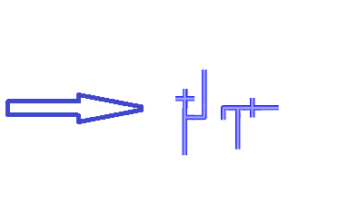
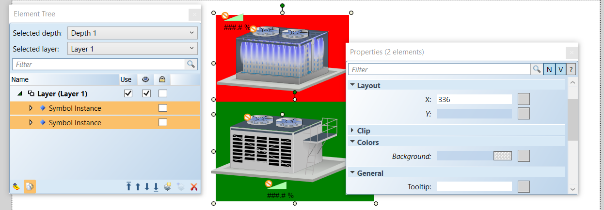
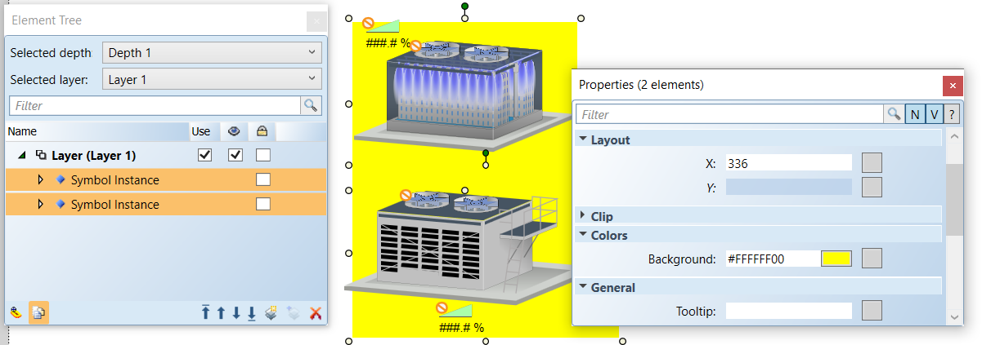
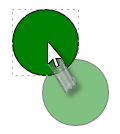

Configuring Elements
Element handles are control points attached to a vector drawing graphic that allow you to control the size, shape, rotation, and position of the graphical element. Handles are visible in Design and Test mode only, and they always appear over a graphical element.
When you move elements, only the bounding rectangle handles of each element are visible. When you rotate elements, both the rotating and moving handles are visible.
In select and multi-select mode, only resize and rotation handles are visible. They are also visible if the element width or height, or both, is zero. The size of a handle does not change when you zoom in or out of a graphic.
Alignment and Precision
When working with elements that need to be aligned precisely and of the same size, care must be taken during the creation of the elements so that when the elements are combined the composite symbol image is seamless on the screen at any resolution.
As a rule, when you are working with elements, you should always increase the zoom level of the canvas to allow for greater precision. The higher the zoom level the more granular the increments are, and the more precise any horizontal or vertical lines can be achieved. Also keep in mind that at higher zoom levels the incremental movement changes relative to the zoom level factor. When working with a path element, if the vertices alignment is not perfect, the final image may result in rounding off that may be inconsistent with other elements that are aligned to that path element.
For example, if you are connecting two pipe symbol pieces that have been created with the path elements and the vertices of the path elements that make up the pipe pieces are vertically and horizontally straight to precision and the symbol pieces are of equal width, you will always see a consistent and uniform rendering regardless of zoom level. As in the image below, the paths and symbols that make up the adjacent sides of the pipes are inconsistent and the composite image of the symbols is not uniform.

Alignment and Multiple Drag-and-Drop
You can drag multiple objects from System Browser to the Graphics Editor. These objects will display in the alignment wrapped mode. This means the objects will display side-by-side in a row, and wrap to the next row as needed. When you drop the objects, they will remain selected, and if you click , they will then display in a cascaded format on your canvas.

NOTE 1:
When you create elements that will be connected to other elements, it is imperative that the elements are of the same size, otherwise the transition from one element to the next will not be smooth or perfect.
NOTE 2:
When creating a path element, the vertices alignment should be perfectly vertical and horizontal to avoid any rounding off and to ensure perfect alignment with other elements.
NOTE 3:
When creating a path element, you should also make sure that the adjacent width of the element, is equal in size.
Bulk Editing Elements
By selecting multiple elements on the canvas, you can simultaneously modify their common properties. If an element does not have a matching property with the other elements in the selection, the element is ignored.
If the selected elements share the same property but any of them has a different value for that property, the Properties View will display a blue background in that property field. Entering a new value will apply that value to all the selected elements.
In the example below, two symbol instances are selected for bulk editing. However, each has a different Background color and Y position. Therefore, the fields display a blue color. Both elements share the same X position and therefore the value is the same and displayed for both:

With the multiple elements selected and then changing the Background color to yellow, the field is updated and the color yellow is applied to both Symbols:

Combining Elements
The combine tasks, located on the Home tab, in the Selection group, allow you to combine two element shapes to create a new and separate path element. You have several options to determine how the two elements should be combined to create the new shape.
The combine feature only works with the drawing elements that create shapes:
- Ellipse
- Path
- Polygon
- Rectangle
The combine features do not work with the Text, Line, or Animation elements.
Element Properties
Elements have properties associated with them that are configured in the Properties View. Each property belongs to a category of properties. You can move your mouse over a property listed in the Properties View, to display a brief description of the property, or for a more detailed description of the property, including property type, allowable input values, and the default value, click Show Property Detail . Every element property can be animated. The animation is implemented by creating evaluations for a property. The evaluation value is always added to the design value.
Grouping and Ungrouping Elements
The four Group options allow you to group or ungroup elements, or have elements join or leave existing groups.
Creating Groups
One reason to create a group is to combine multiple graphic elements so that when one element is repositioned, all other elements move with it. Another reason is to modify several elements at the same time. For example, if you want all the elements in a group of three elements to appear wider by the same amount, you can simply select the group, and then modify the Width property in the Graphic Properties View. You can also select individual elements within a group by using the Element Tree View to modify the element accordingly. If you change the size of an element and the element boundary exceeds the group boundary, the group is adjusted automatically. This also applies if an inner element reduces the size of the group boundary. To ensure that no elements reach beyond the group boundary, you can specify a value of 0 (zero) for the following group properties: Clip Left, Clip Top, Clip Right, and Clip Bottom.
The Group function becomes active only when you select two or more elements from the same layer or group. If you select a group, and then press DEL, all elements in the group are removed. If you would like to add or remove one or more elements from a group while retaining the group itself, see the sections Joining a Group and Leaving a Group.
You can group multiple elements of any type within the same layer or group with the Group option. When you add a new group element, it is inserted at the same z-order position as the selected element with the highest z-order (the top-most selected element). The z-order within all selected elements remains in the newly created group, regardless of the order of the selection.
Ungrouping Elements
For various reasons, you might want to ungroup elements as well. For instance, you might want to re-arrange the elements within a group, in which case, you would need to ungroup them first. Or, you might want to modify an element separate from the group to see how it will look on its own before you decide whether or not it should stay in the group. The Ungroup function becomes active only when at least one of the selected elements is a group.
The Ungroup function only removes the group element. It does not physically separate the grouping of elements. In practical terms, what this means is that selecting Ungroup simply unlocks the group and allows you to modify individual elements. All elements in the group are moved to the parent of the group that was removed, based on the Z-order of the group. The Z-order of the inner elements remains the same. The position and angle of every removed element is recalculated so that the element does not visually change in the graphic or symbol.
Joining a Group
The Join Group option allows you to add one or more graphic elements to an existing group by using the drag-and-drop feature in the Element Tree View. The option is enabled only when you select two or more elements and the element selected last is a group. In terms of the Z-order, elements that are added are unpredictable, though elements with the same parent retain their Z-order in that parent. The position and angle of every added element is recalculated so that the element does not visually change in the graphic or symbol.
Leaving a Group
The Leave Group option allows you to remove one or more graphic elements from a group. You can remove elements from a group either by selecting the element in the Element Tree View and then deleting the element or selecting the Leave Group option. The option is enabled only when you select an element serving as a group child. Elements with the same parent will retain their relative z-order after they leave the group. The position and angle of every removed element is recalculated so that the element does not visually change in the graphic or symbol.
Linking Elements
Elements can be configured so that when a graphic is open you can click an element and quickly navigate to an internal Desigo CC link (data point object or application) and make it the new primary selection in either the Primary or Secondary pane. Or, you can configure the element to navigate to an external link such as another application, a website, or document.
Navigation via an element is configured in the Properties View, from the element’s Navigation properties. From the Navigation properties there are several properties that allow you to enter the path and\or name of the link, select how to trigger the navigation (click or double-click) from the element, and enter a brief descriptive text to add to the element’s tooltip.
Internal Links
The Navigation Target property allows you to enter a data point reference, an application name and/or file name, or a web address. When the property is a data point reference, it is an internal Desigo CC link. The data point or object reference can be either a full name or the object identifier. The Navigation Parameter property supports a data point target, where you can specify a data point reference, such as a viewport, graphic, or value, that is sent as context to the new primary selection.
External Links
If the targeted link is an external link, they are handled as follows:
- Application name with arguments - The application name is the left part of the link reference followed by a space, and then the file name. If the application name or argument contains spaces, they must both be encased in quotation marks. For example,
- Winword mydoc.doc
- Winword.exe mydoc.doc
- “[local drive]:\Program Files\Winword.exe”
- “my doc.doc”
- File Name - If the link reference contains only a file name, the default application for that file type is started. For example, if you specify a .txt file, the Notepad application opens. If the file name contains spaces, it has to be encased in quotation marks quotes. For example,
- mydoc.doc
- “C:\Data Files\Readme.txt”
- “\\MyServer\MyShare\SubFolder\Read me.pdf”
- Web Link – If the link is a web address, the address must be preceded by the protocol (http, https, ftp, etc.) For example,
- https//www.google.com
NOTE:
Desigo CC always assumes the path is from the local machine the software is installed on, unless otherwise indicated in the Navigation Target field.
Locking and Unlocking Elements
You can lock an element, so that it cannot be selected, moved, or resized inadvertently on the graphic canvas while working with other unlocked elements. Elements are locked from the Element Tree View or from the graphic canvas via the menu that displays when you right-click the element. An element, however, can only be unlocked from the Element Tree View.
Locked elements have the following functionality:
- They can be locked from the Element Tree View or from the graphic canvas via the menu that displays when you right-click an element.
- They can only be unlocked from the Element Tree View.
- A locked element cannot be selected from within the Element Tree View, can be moved, or resized on the graphic canvas.
Resizing Elements
Elements can be resized on the active canvas using the control handles that display when you click an element in Design mode. There are, however, a few notes and exceptions to keep in mind when resizing elements:
- The stroke thickness is never affected except for the XAML object.
- The font size is not affected by resizing, unless you have enabled Resize Fonts
 from the Home tab’s Format group.
from the Home tab’s Format group. - Resizing an element while pressing the ALT key maintains the aspect ratio of the element.
- Resizing an element while pressing the CTRL key maintains a square.
- When the new width/height is negative, the FlipX/FlipY properties of all elements are toggled.
- Resizing a line or a polygon does not change the point collection; it just changes the view. For example: Resizing the polygon width from 100 to 0 is allowed. After that, the polygon width can be resized back to 100 and the polygon looks the same as before. This behavior is also important for scripting the size.
- Resizing a group or symbol instance affects all inner elements evenly.
- Resizing an animation object affects all resulting symbol instance frames with the same scale factor. This is only important if the resulting frames have different sizes. For example: If an animation object is resized to one-half of its original size, all resulting frames are one-half of their original size.
- The resizing control handles are not affected by the zoom level; that is, they never change their size.
Re-use and Copy Formatting
There are a number of ways to apply and re-use formatting from one drawing element to another on an active canvas.
- Re-Use Format – Allows you to apply formatting of a selected element to the next drawn element on the canvas. This is done by clicking on an element on the canvas so that the handles are visible, and then selecting a drawing element. The newly drawn element will take on the formatting of the selected element. For example, if you have just used the ellipse element to draw an ellipse on your graphic, and you would like to add a rectangle with the same shading and formatting as the ellipse element, simply click the ellipse on the graphic so that the handles and adorners display, and then select the rectangle element from the canvas. The rectangle element takes on the color formatting of the ellipse.
- Copy Format – You can select the Copy Format
 to copy the formatting of an element, and then click Paste Format
to copy the formatting of an element, and then click Paste Format  to paste the formatting on one or more elements on the canvas.
to paste the formatting on one or more elements on the canvas.
Selecting and Moving Elements
When an element is active, the handles that surround the element are visible on the canvas. These handles are used for rotating and resizing. The line and path elements, also display start and end handles for editing purposes.
Selecting Elements
An element can be selected from either the Element Tree View, when Show all Elements  is enabled, or from the canvas by clicking the element. To select multiple elements, press CTRL and click each element you want to select. From the canvas, you can also use the rubber band, a tool that allows you to click and drag your mouse to enclose elements in the blue, bounding rectangle created by the movement of the mouse. Upon release of the mouse, all elements in the bounding rectangle are selected and active.
is enabled, or from the canvas by clicking the element. To select multiple elements, press CTRL and click each element you want to select. From the canvas, you can also use the rubber band, a tool that allows you to click and drag your mouse to enclose elements in the blue, bounding rectangle created by the movement of the mouse. Upon release of the mouse, all elements in the bounding rectangle are selected and active.
Moving Elements
Elements or guidelines can be moved around the graphic canvas in Design mode using the mouse to click-and-drag the element. A grayed clone of the element remains in the original spot on the canvas, with the original attributes applied, until you release the mouse button. During a click-and-drag move, you can press the ESC key if you want to undo the move.

Tooltips
You can create a tooltip to display over an element on a graphic in the Graphics Viewer. The tooltips are created in the Graphics Editor, in the Properties View via the General > Tooltip property. The text box contains any descriptive text entered into the tooltip property.
Related Topics
For workspace overview, see the following:
- Element and Graphic Properties
- Home Tab
For background information, see the following:
- Element and Graphic Properties
- Grids Properties
- Guidelines on a Graphic
For related procedures, see Additional Graphics Editor Procedures